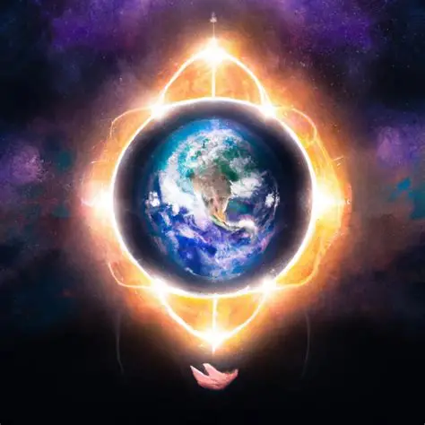

O que é essa teoria?

O que é essa teoria?
A teoria de que a Terra é uma prisão espiritual afirma que as almas humanas estão presas ou foram aprisionadas neste plano físico, contra sua vontade ou sem conhecimento disso. É uma ideia recorrente em vertentes esotéricas, gnósticas e até em teorias modernas de conspiração espiritual e alienígena.
Origens e Influências
1. Gnosticismo (século I-III d.C.)
Os gnósticos antigos acreditavam que:
O mundo material era uma criação imperfeita ou maligna de um demiurgo, uma entidade ou por eles chamado de um "deus" inferior e maligna.
As almas humanas eram espíritos divinos aprisionados neste mundo material.
O objetivo da vida era alcançar o conhecimento (gnose) para libertar as almas e retornar ao reino espiritual.
2. Hinduísmo e budismo
Ambas as tradições veem a vida material como um ciclo de sofrimento e ilusão (samsara).
O objetivo é alcançar a iluminação ou moksha, libertando-se do ciclo de renascimento.
Embora não vejam a Terra como uma prisão no sentido literal, compartilham a ideia de que o mundo material é um lugar de aprisionamento espiritual(ignorância espiritual).
O objetivo é escapar disso através do moksha (libertação) ou nirvana.
Versões modernas e teorias de conspiração
1. Aprisionamento por alienígenas
Algumas teorias de conspiração afirmam que seres extraterrestres aprisionaram a humanidade na Terra para extrair energia emocional.
Ex: “Arcontes” na tradição gnóstica moderna.
Teóricos como David Icke falam de entidades reptilianas que manipulam a realidade.
Outros dizem que a Lua é um sistema de vigilância para manter a alma na Terra.
2. Matrix Espiritual
Versão inspirada no filme Matrix (1999):
A realidade é uma simulação projetada para iludir a alma.
A alma é reciclada por um sistema artificial que apaga sua memória entre reencarnações.
O ciclo seria controlado por entidades que se alimentam da nossa energia espiritual.
3. Reencarnação como armadilha
Ideia de que o ciclo de reencarnações é uma prisão, não uma oportunidade de evolução.
Quando morremos, somos induzidos a “seguir a luz”, onde nossa memória é apagada e somos reenviados à Terra.
Supostas vozes de “guardiões” e entidades enganosas nos manipulam a continuar no ciclo.
Fontes e autores influentes
Variações e Metáforas